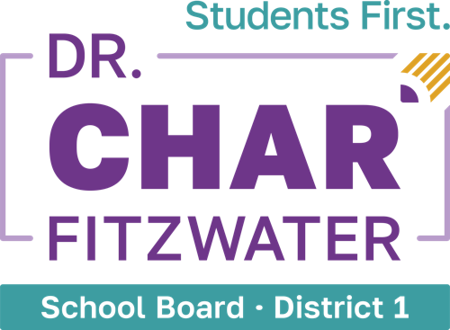
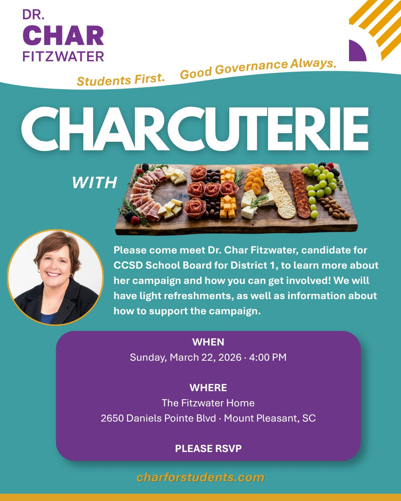
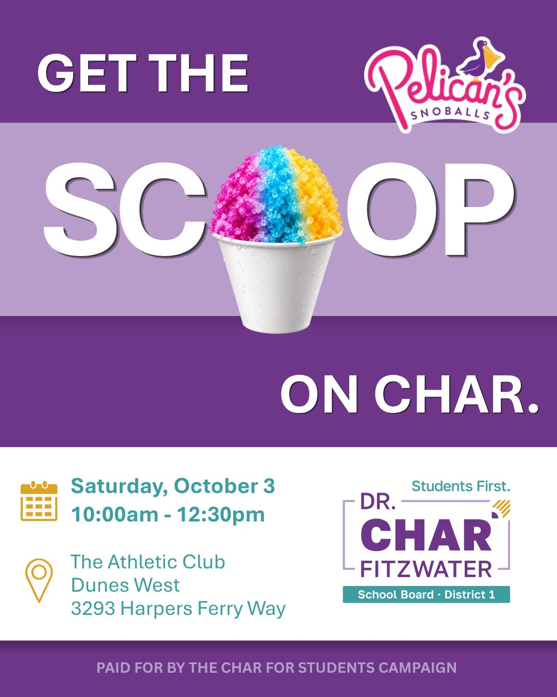
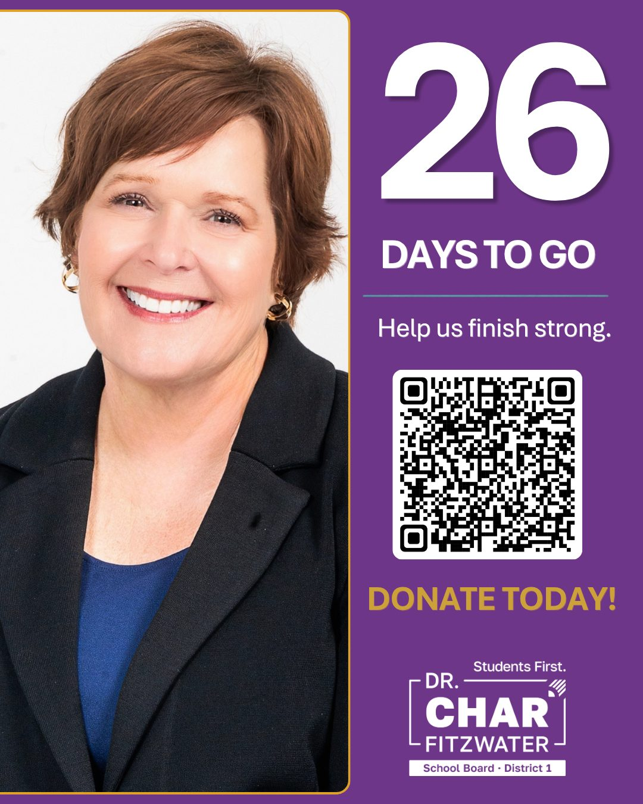
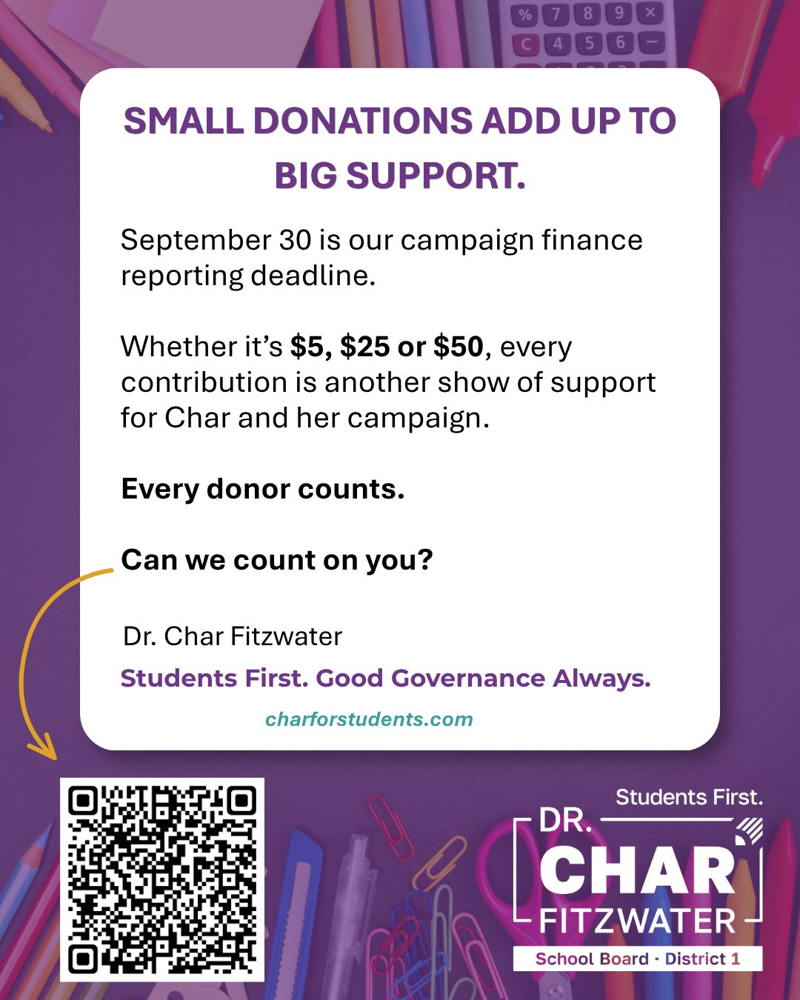
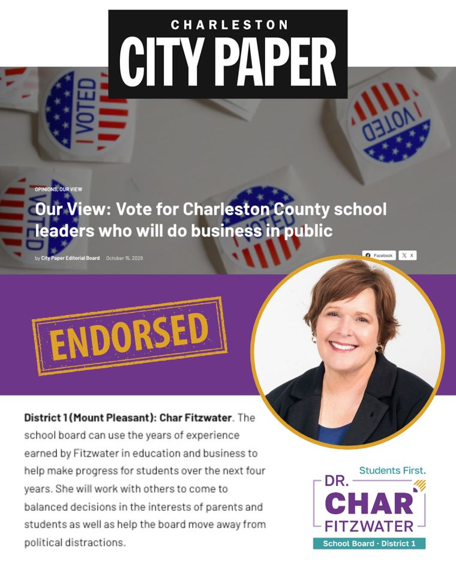

A school board race, run like a pro campaign.
Everything digital: strategy, graphics, video, copy, and Meta ads.
With a $3,000 budget, every dollar had a job. I built separate audiences for known District 1 voters and the broader geographic area, using voter-file targeting to prioritize repetition with likely voters while keeping general awareness costs low.
Across four rounds, I tested 11 creatives and adjusted the strategy based on what was working.
- People reached
- 99,000+
- Of the matched voter-file audience reached, averaging approximately 9 impressions per person
- 80%
- Higher 15-second video viewing rate among the voter-file audience versus the broader audience
- 8×
- Cost per 3-second video view
- 4–6¢
- Total Meta ad budget
- $3K
- Creatives tested across four rounds
- 11




